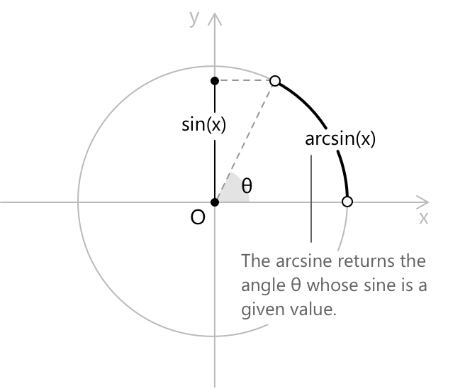
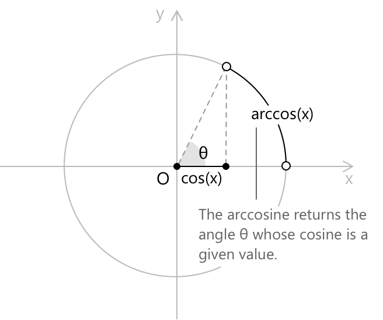
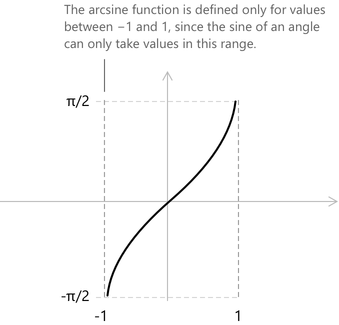
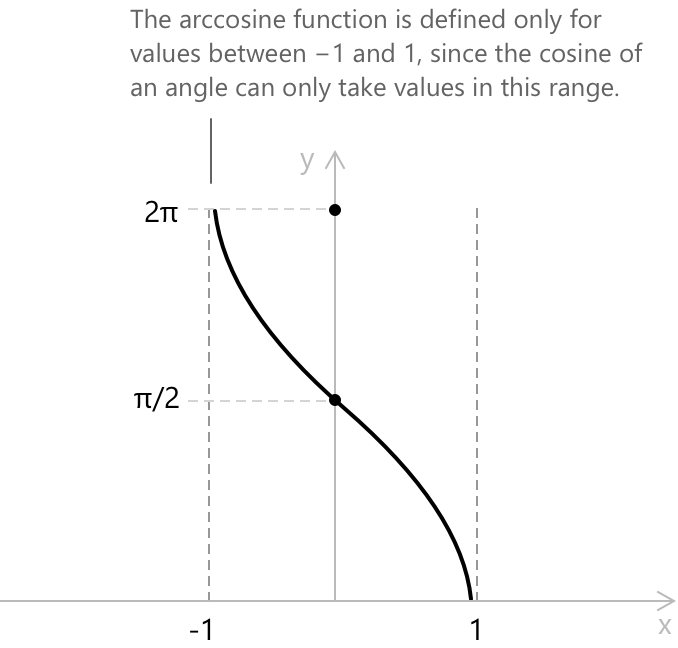

Арксинус та арккосинус
Арксинус
Арксинус — це обернена до функції синус. Для заданого числа \(x \in [-1, 1]\) (тобто області значень, які може набувати функція синус), \(\arcsin(x)\) визначається як кут \(\theta\) на проміжку \([-\pi/2, \pi/2]\), синус якого дорівнює \(x\). Загалом, обернена функція скасовує дію вихідної: якщо функція \(f\) відображає значення \(x\) у значення \(y\), то її обернена \(f^{-1}\) відображає \(y\) назад у \(x\). Функція синус приймає кут і повертає дійсне число з проміжку \([-1, 1]\), а арксинус робить протилежне, повертаючи кут, синус якого дорівнює заданому значенню. Цей обернений зв'язок виражається тотожністю:
\[ \sin(\arcsin(x)) = x \quad \forall \, x \in [-1, 1] \]

У формальних термінах означення арксинуса є наступним:
\[ \arcsin(x) = \theta \quad \iff \quad \sin(\theta) = x \quad \text{та} \quad \theta \in \left[-\frac{\pi}{2}, \frac{\pi}{2}\right] \]
Обмеження \(\theta\) проміжком \(\left[-\pi/2, \pi/2 \right]\) є необхідним, оскільки функція синус не є ін'єктивною на всій своїй області визначення. Без цього обмеження обернена функція не була б однозначно визначеною.
Приклад
Розглянемо обчислення \(\arcsin\!\left(\frac{1}{2}\right)\). Ми шукаємо кут \(\theta \in \left[-\frac{\pi}{2}, \frac{\pi}{2}\right]\) такий, що \(\sin(\theta) = \frac{1}{2}\). Згідно зі стандартними значеннями функції синус, ми знаємо, що:
\[ \sin\!\left(\frac{\pi}{6}\right) = \frac{1}{2} \]
Оскільки \(\frac{\pi}{6}\) належить проміжку \(\left[-\frac{\pi}{2}, \frac{\pi}{2}\right]\), він задовольняє всім умовам, що вимагаються означенням.
Отже, ми отримуємо: \[\arcsin\!\left(\frac{1}{2}\right) = \frac{\pi}{6}\]
Поширені значення арксинуса
У наступній таблиці зібрані стандартні значення \(\arcsin(x)\) для найбільш часто зустрічаюрих аргументів:
\[ \begin{align} x &= -1 &\quad& \arcsin(-1) = -\pi/2 \\[6pt] x &= -\sqrt{3}/2 &\quad& \arcsin(-\sqrt{3}/2) = -\pi/3 \\[6pt] x &= -1/2 &\quad& \arcsin(-1/2) = -\pi/6 \\[6pt] x &= 0 &\quad& \arcsin(0) = 0 \\[6pt] x &= 1/2 &\quad& \arcsin(1/2) = \pi/6 \\[6pt] x &= \sqrt{3}/2 &\quad& \arcsin(\sqrt{3}/2) = \pi/3 \\[6pt] x &= 1 &\quad& \arcsin(1) = \pi/2 \end{align} \]
Арккосинус
Арккосинус — це обернена до функції косинус. Для заданого числа \(x \in [-1, 1]\) (тобто області значень, які може набувати функція косинус), \(\arccos(x)\) визначається як кут \(\theta\) на проміжку \([0, \pi]\), косинус якого дорівнює \(x\). Як і в випадку з арксинусом, обмеження області значень проміжком \([0, \pi]\) є необхідним для того, щоб обернена функція була однозначно визначеною, оскільки функція косинус не є ін'єктивною на всій своїй області визначення. Відповідна тотожність:
\[ \cos(\arccos(x)) = x \quad \text{для всіх } x \in [-1, 1] \]

У формальних термінах означення арккосинуса є наступним:
\[ \arccos(x) = \theta \quad \text{тоді і тільки тоді, коли} \quad \cos(\theta) = x \quad \text{та} \quad \theta \in [0, \pi] \]
Поширені значення арккосинуса
У наступній таблиці зібрані стандартні значення \(\arccos(x)\) для найбільш часто зустрічаюрих аргументів:
\[ \begin{align} x &= -1 &\quad& \arccos(-1) = \pi \\[6pt] x &= -\sqrt{3}/2 &\quad& \arccos(-\sqrt{3}/2) = 5\pi/6 \\[6pt] x &= -1/2 &\quad& \arccos(-1/2) = 2\pi/3 \\[6pt] x &= 0 &\quad& \arccos(0) = \pi/2 \\[6pt] x &= 1/2 &\quad& \arccos(1/2) = \pi/3 \\[6pt] x &= \sqrt{3}/2 &\quad& \arccos(\sqrt{3}/2) = \pi/6 \\[6pt] x &= 1 &\quad& \arccos(1) = 0 \end{align} \]
Властивості арксинуса та арккосинуса
Функції арксинуса та арккосинуса пов'язані наступною тотожністю, яка виконується для кожного \(x \in [-1, 1]\):
\[ \arcsin(x) + \arccos(x) = \frac{\pi}{2} \]
Ця тотожність відображає взаємодоповняльну природу двох функцій: оскільки синус і косинус доповняльних кутів рівні, кут, синус якого дорівнює \(x\), і кут, косинус якого дорівнює \(x\), завжди в сумі дають \(\pi/2\).
Друга властивість, яку варто відзначити, стосується композиції функції з її оберненою. Один напрямок є очевидним: застосування арксинуса після синуса або арккосинуса після косинуса відновлює початкове значення, за умови, що аргумент лежить у відповідному проміжку. Формально:
\[ \sin(\arcsin(x)) = x \quad \forall x \in [-1, 1] \]
\[ \cos(\arccos(x)) = x \quad \forall x \in [-1, 1] \]
Однак обернена композиція загалом не виконується. Для довільного кута \(\theta\) маємо:
\[ \arcsin(\sin(\theta)) = \theta \quad \iff \quad \theta \in \left[-\frac{\pi}{2}, \frac{\pi}{2}\right] \]
\[ \arccos(\cos(\theta)) = \theta \quad \iff \quad \theta \in [0, \pi] \]
Поза цими проміжками арксинус та арккосинус повертають єдиного представника \(\theta\) у своїх відповідних областях значень, а не сам \(\theta\). Ця асиметрія є прямим наслідком обмежень області визначення, запроваджених для того, щоб обернені функції були коректно визначеними, і саме це відрізняє справжню обернену функцію від простого лівого або правого оберненого елемента.
Функції арксинуса та арккосинуса
Функція арксинуса \(f(x) = \arcsin(x)\) кожному значенню \(x \in [-1, 1]\) присвоює кут \(\theta \in \left[-\frac{\pi}{2}, \frac{\pi}{2}\right]\), синус якого дорівнює \(x\). Її графік є неперервною, строго зростаючою кривою.

- Область визначення: \(x \in [-1, 1]\)
- Область значень: \(y \in [-\pi/2, \pi/2]\)
- Періодичність: функція арксинуса не є періодичною.
- Парність: функція є непарною, задовольняючи рівності \(\arcsin(-x) = -\arcsin(x)\).
Функція арккосинуса \(f(x) = \arccos(x)\) кожному значенню \(x \in [-1, 1]\) присвоює кут \(\theta \in [0, \pi]\), косинус якого дорівнює \(x\). Її графік є неперервною, строго спадною кривою.

- Область визначення: \(x \in [-1, 1]\)
- Область значень: \(y \in [0, \pi]\)
- Періодичність: функція арккосинуса не є періодичною.
- Парність: функція не є ні парною, ні непарною, але задовольняє тотожність \(\arccos(-x) = \pi – \arccos(x)\).